Controller Stuff
Table of Contents
Single Motion / Phob Stuff
This page holds info about the phob controller settings I use, important for building backup controllers for consistent performance. As a fox player and non-rectangle user, I do not have the luxury of simply buying another controller if mine breaks and assuming it will be the same as the last one.
Ledgedashing
Why I Use Single Motion
There are three primary methods to input a ledgedash, all with pros and cons.
Away Release: hold away from the ledge, move to down forwards and jump. The pros of this are that it's very consistent to get off the ledge with it, and you will never get a fastfall even if your jump is late. The cons of this are that the input is a really fast stick movement (i.e. hand strain), you can get doraki walljump airdodge by accident on FD, and you can get polled between the back + forward movements to get neutral jump instead of forwards jump. Many top players use this method (Cody Schwab, Plup, etc).
C stick Release: really good method for claw users, or people who play characters where the ledgedash input is pretty slow (e.g. Marth). I sometimes get ledgedrop bairs using this method, but I think that can be mitigated with good inputs. KoopaTroopa895 uses this method and he has some of the best ledgedashes of any top-level marth player.
Single Motion: hold down-forwards to release the ledge, jump, and airdodge. Traditionally this is done with Kadano's optimal ledgedash angle which is just a bit shy of the 45 degree notch, but certain controllers tend to maximize this angle due to PODE delaying the X-axis input. The pros of this are that it's the easiest method to get lots of intangibility frames, and it's the least straining of the three methods. However, the cons of this method are that jumping on the 2nd frame after ledgedrop will give you a frame of fastfall, which can kill you. Also, it's more polling dependent than the other methods.
{kind=link}
I use single motion ledgedash, primarily because I'm interested in abusing the intangibility frames, I want to use the method with the least hand strain, and open source controllers like PhobGCC make the PODE-dependent aspects of this no longer random. Because you can simply emulate PODE with custom settings on Phob, it seems like a good method to use. This topic was discussed by my good friend R2DLiu at length a few years ago, which is an excellent resource for how this behavior works for OEMs.
Inputting Single Motion Ledgedash
The fastfall line is (Y -.6625). The forwards jump line is (X .2875). The neutral getup angle is roughly 50 degrees. With this in mind, our ideal outcome (for Fox, specifically) is:
- Input downforwards, game recieves a straight down input that will not yield fastfall.
- Jump forwards on frame 2, or fall with no fastfall and jump on frame 3
- Input airdodge 3 frames after doublejumping
Depending on ECB, it may be better to input the airdodge 4 frames after instead (i.e. from fastfall to ledge). The frame 4 airdodge is also robust to not knowing if you jumped on frame 2 or 3, so it might be a more consistent target than the first one.
A common misconception about the single motion ledgedash input is that it's a very fast input, but that is mostly mixing it up with the away ledgedash input, which is very fast. A proper single motion ledgedash is actually quite a bit slower than the other methods. The reason for this is that you want frames 1 and 2 to be above -.6625, you want frames 2 and 3 to be beyond .2875, and you don't need to reach the gate values until much later when you airdodge.
We can show this off with a number of simulated input trajectories just to illustrate what I mean. This is going to be a lot of charts in a row so bear with me. What I am going to show is a simulated input from (0,0) to (0.600, -0.800), which falls within our OEM single motion zone shown off by Kadano. I'm going to show this with three polling timer offsets (0ms, 8ms, 14ms), at three speeds (9ms, 35ms, 45ms).
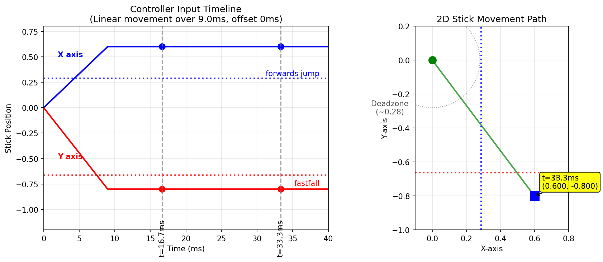
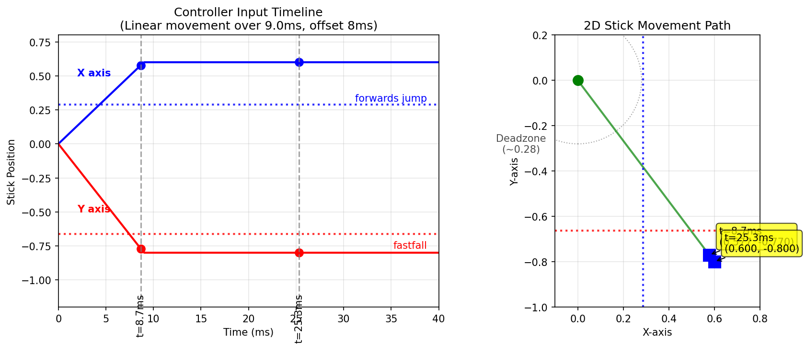
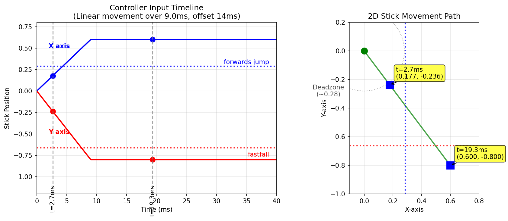
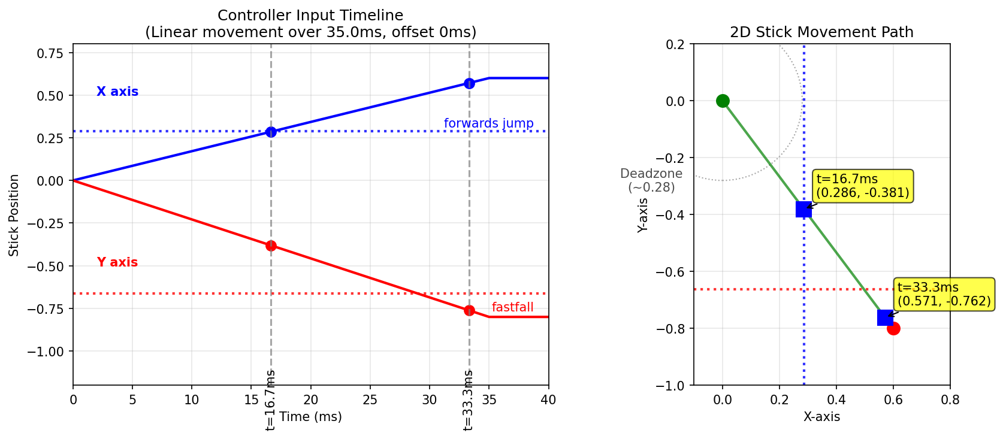
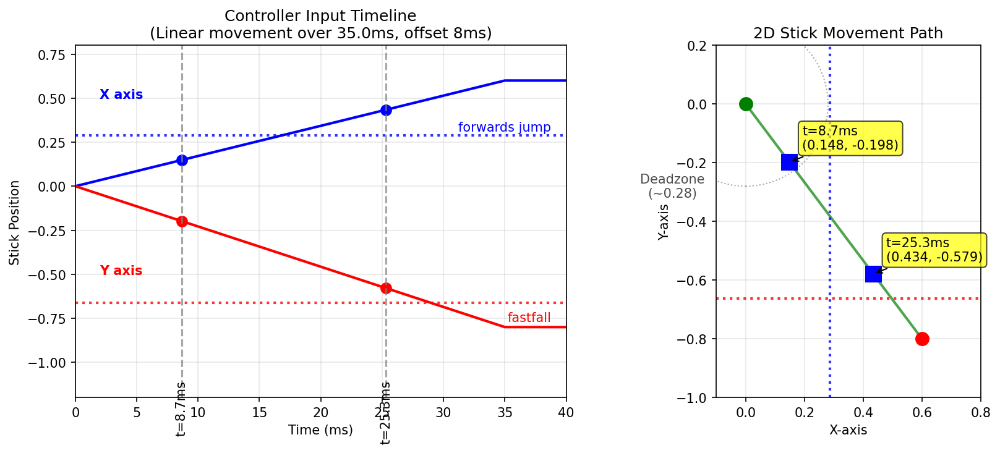
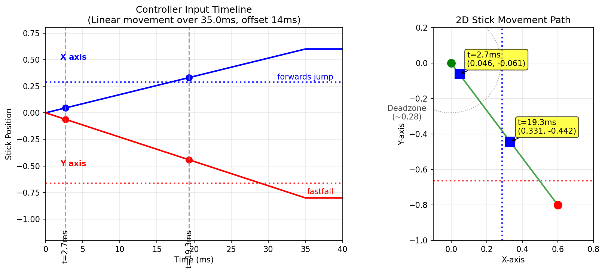
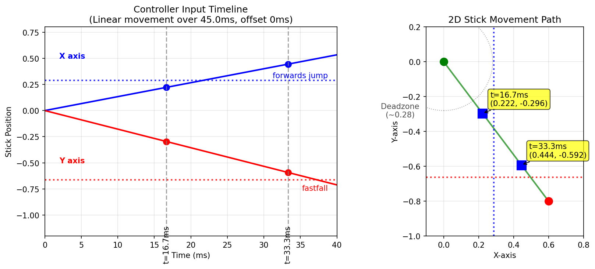
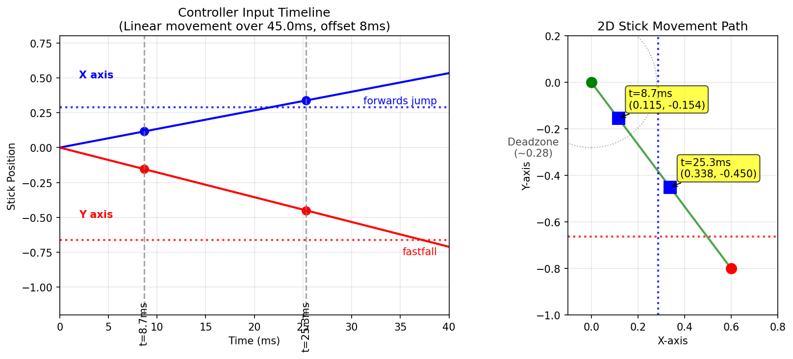
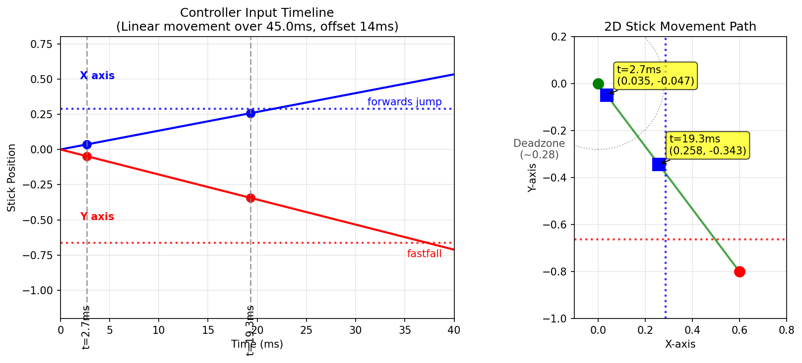
With every method, there carries some risk of getting the initial input polled while in the deadzone (the polling timer being essentially random is the big source of human error in hitting 1f windows). The most straightforward way to get ledgedashes this way consistently is to aim the jump at the third frame after you input the motion. This will give you the frame perfect jump if you get polled in the deadzone on the first frame, and will give you 1f late jump if it polls outside the deadzone.
However, we can see clearly here that faster stick inputs carry a double sided risk: they are more likely for the second polled frame to land below the fastfall line (in some cases the first frame already is below this line, unless we get very lucky with the polling timer).
Here are the scenarios if you input the jump on the third frame after the initial input.
A: Your first frame is polled in the deadzone. You do a 1f late release (2f cliffwait), and the frame perfect jump on the frame after your ledge release (~13-14f galint).
B: Your first frame is polled outside the deadzone. You do a frame perfect release (1f cliffwait), and a 1f delayed jump after your ledge release. If you get a fastfall here, you will likely die. If you get no fastfall here, you will get a perfectly fine ledgedash.
Alternatively, you can start the motion 1f before the first frame you can let go. If you get polling timered here, you will do a frame perfect ledgedash. If you do not get polling timered here, you will likely do tournament winner (since you input ledgedrop too early and then pressed jump while on ledge). If you can reliably do this input slow enough to always take a frame's worth of time to exit the deadzone, this might be better, but it seems like doing a bit too much theorycrafting based on this linear speed assumption (which is likely not a perfect representation).
The Frame 4 Airdodge Compromise
Choosing to do a frame 4 airdodge instead of a frame 3 one is pretty strong. The reason it's pretty strong is that it works for a lot more ECB states compared to the frame 3 one. The frame 4 airdodge is sort of like a second serve, it's a good consistent input that gets lots of GALINT and gives a pretty low chance of dying, even if it sacrifices some optimality.
TODO get galint values / death or no death for:
firefox regrab
- 1f fall
- 2f fall no ff
- 2f fall ff
fastfall
- 1f fall
- 2f fall no ff
- 2f fall ff (pretty sure this still dies)
doublejump back regrab
- 1f fall
- 2f fall no ff
- 2f fall ff
How This Interacts With PODE
PODE, as covered by R2DLiu in the past, can be thought of as an X-axis delay, providing us a frame of straight down where we would otherwise be getting some non-cardinal angle. This lets us do a single motion ledgedash even if we input a shallower angle, for example 45 degrees.
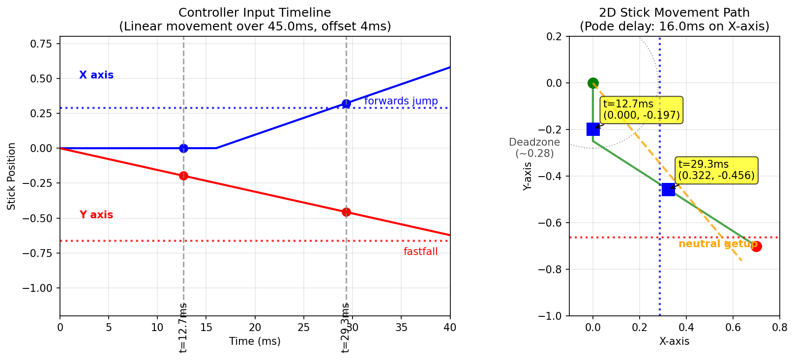
You can see that, effectively, this is the same as a regular single motion ledgedash, except we can use shallower angles than would otherwise be possible on a normally functioning controller. This is insanely powerful, but it comes with a obvious drawback of being completely at the mercy of your controller happening to have this bug.
A funny thing about this bug is that this changes the nature of the polling timer stuff we just talked about. Now instead of making sure we don't get fastfall, we can just pick an angle that will never give us a fastfall. However, this comes attached to now needing to make sure the polling timer doesn't give us neutral getup. Annoyingly, this changes what speeds are good compared to an OEM Kadano-type single motion ledgedash, since now going too slow is likely to give us a neutral getup.
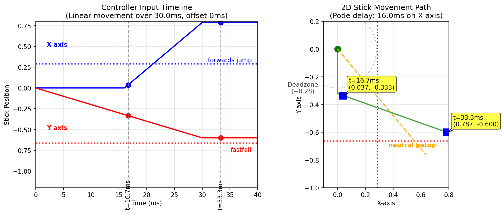
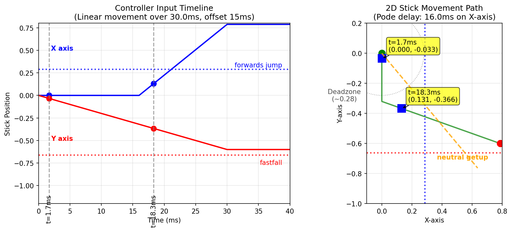
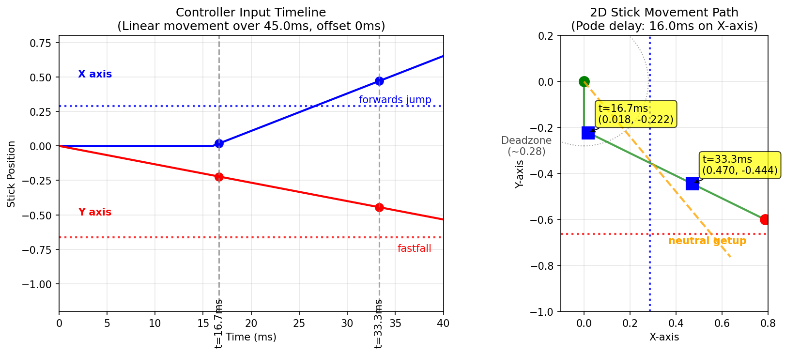
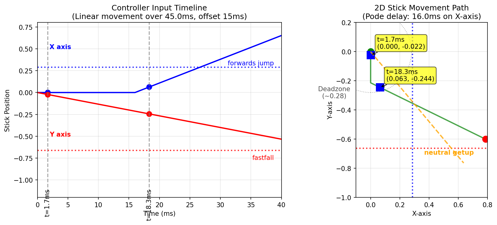
However, I am not as interested in PODE itself, since getting a controller with these properties involves buying a lot of controllers (and DQing from events if your controller stops having it). Ideally we can figure out the ideal settings to do something like this with a PhobGCC, and then learn to ledgedash with those settings forever.
My Controller Settings
You can emulate PODE by adjusting waveshaping, axis smoothing, and smart snapback filtering. We will get into what these do in a moment, but here's what shows up in smashscope when I check the values. You can adjust these values by following the phobGCC documentation.
Triggers (waveshaping) L: 8, R: 0
- L trigger (X-axis) = 8
- R trigger (Y-axis) = 0 (disabled)
- Setting 8 maps to coefficient ~0.00556, providing good pode-like behavior where fast movements are filtered more heavily than slow ones
Analog stick (smart snapback filter) x: 4, y: -5
- X-axis = 4 (positive snapback = Kalman filtering)
- Y-axis = -5 (negative snapback = low-pass filter without rise time shortening)
- The negative Y value is supposed to make the stick return to center slower and smoother
C stick (axis smoothing) x: 5, y: 0
- X-axis = 50% smoothing strength (coefficient ~0.659)
- Y-axis = 0 (no smoothing)
TODO: These are probably pretty bad after investigating this somewhat.
Understanding The Phob
The relevant links to understanding waveshaping, smart snapback filter, and axis smoothing, can be found in these three spots in the phobGCC code:
- axis smoothing (phobgcc.h)
- waveshaping (also filter.h)
- smart snapback filter (filter.h)
Generally speaking, even players who know how to use smashscope at all will mostly just input values people tell them to use, without clear understanding of what is actually happening to their controller when they do these things (source: me). I will attempt to pull some of these apart.
Waveshaping
Waveshaping ostensibly works by trying to emulate PODE by delaying the input of one axis specifically. However, it works in an "idealized" manner, where it will delay inputs if they cross a velocity threshold, but leave them alone otherwise.
This is actually really annoying for single motion ledgedash, since it interacts unfavorably with the polling timer. If you do the input too fast, you are at the mercy of the polling timer: too early, and you get polled in the deadzone; too late, you get polled past neutral getup. If you do the input too slow, it doesn't kick in at all, and you will get neutral getup every single time no matter what (since the x axis input won't be delayed).
Here's showing how a 7.5ms fast motion can get you both deadzone polled AND getup polled:
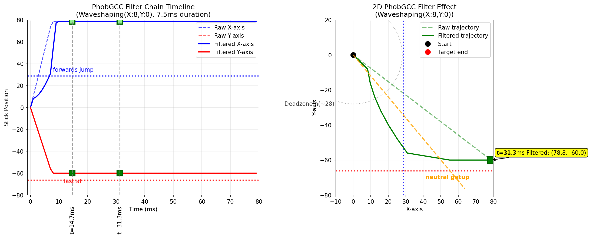
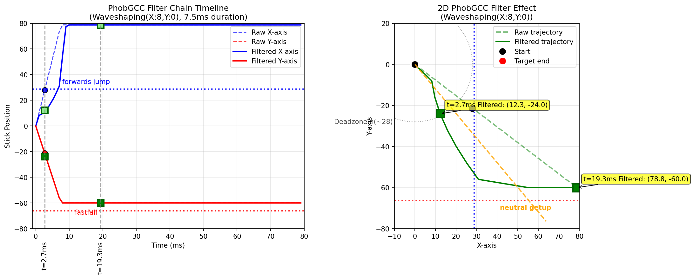
And here's showing how a 12ms fast motion can never get you anything but neutral getup
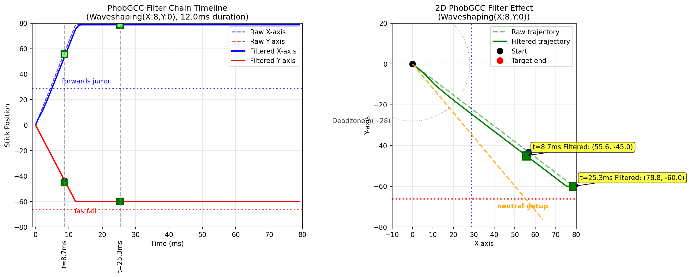
Axis Smoothing
To understand axis smoothing's interaction with this, let's assume a waveshaping x=11 and a speed of 9ms. This is just a cartoon to establish what the other things do.
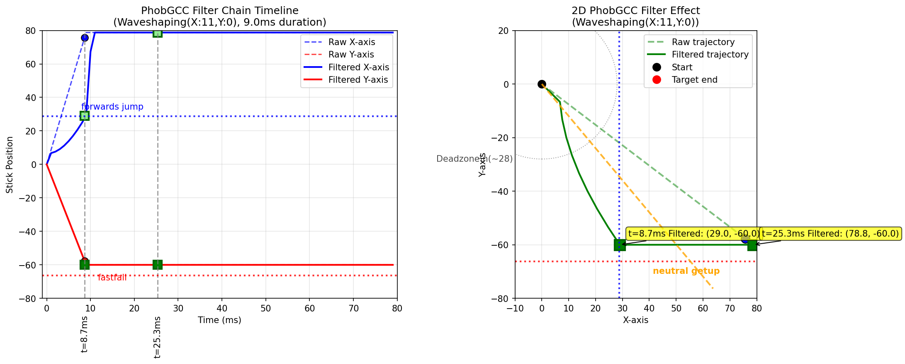
Axis smoothing is pretty simple to understand: it is a low pass filter which is performed at the very end of the chain. The resulting effect is that it will ease into changes rather than having these sharp discontinuities.
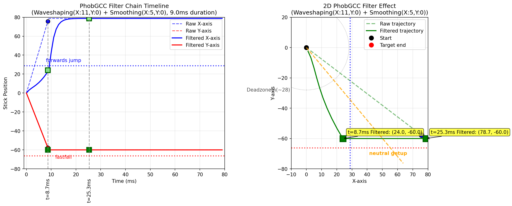
The two main concepts are the gain and the smoothing factor. The gain is just the setting you picked (in this case 5) divided by 10 (the maximum). The smoothing factor is calculated as \((1 - \text{gain}) ^{1.2}\), in this case ~0.435. Then, the output is \(\text{smoothing factor} * \text{input} + (1 - \text{smoothing factor}) * \text{previous output}\).
The purpose of axis smoothing is to reduce jitter / artifacts / noise / etc. Increasing the smoothing will make your controller less responsive, but cleaner, compared to lowering it, which makes your controller more responsive, but noisier. For our purposes, we care about having some smoothing because it moves the curve a little bit to the left, which is desirable for ledgedashing.
Smart Snapback
Smart Snapback actually has two filters, "positive" and "negative". Negative values correspond to something we've seen before, it just applied a low-pass filter to the input. Here we can see what applying negative 5 to the y axis affects the curve:
<image>
In comparison, the X axis uses a Kalman filter, an algorithm which predicts current state given multiple measurements of prior state. It makes sense to use a Kalman filter to prevent snapback, since snapback "bounce" values can be viewed as a noisy measurement of the true intended position (i.e. the origin), and smoothing out that value while keeping normal inputs the same is desirable. Here's how it combines with the low-pass filter for our ledgedash.
<image>
TODO: I think my code for this is wrong, it's complicated in the code.
The TL;DR
Doing this input fast is possible, and for that you want to maximize the amount of curve-per-unit-time to the left of the neutral getup line, most ideally where two frames will be polled left of it, starting from the movement's beginning (either 1 deadzone and 1 drop, or 2 drop). This seems sort of untenable. More reliable is doing the input slowly, swooshing it manually, and getting it consistently with no fastfalls or neutral getups.
Other Important Controller Resources
Sparkplate: full firefox notches are quite a bit cheaper to obtain now that they are mass-producible.
More Links
TODO: Host the smashscope files because they're not available anymore??